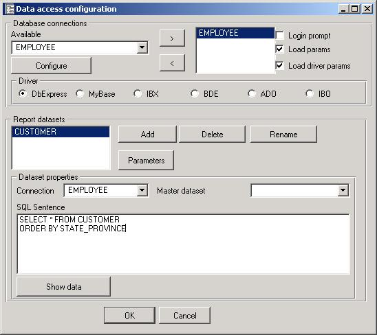
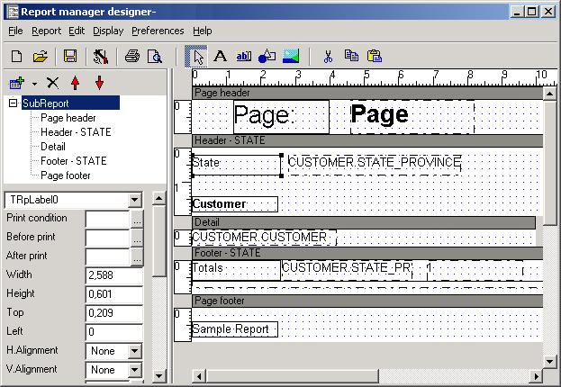
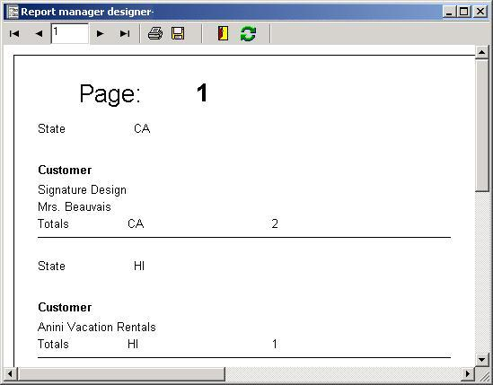

This is a brief introduction of how Report Manager process a report so you can understand the result and design reports in a efficient way.
| Report Components |
| Name | Description |
| Datasets | Datasets are optional but a report usually prints data stored in datasets, the datasets are opened at the beginning of the process, you can open several datasets and establish relations between them |
| Parameters | Parameters are variables that can be printed and can be entered by the end user, you can assign parameters to datasets (parametrized querys) |
| Subreport | A Report contains at least one subreport, if it has more than one the engine will process them in natural order. You can assign a dataset to a subreport, if you assign a dataset the engine will print all the detail type sections once for each record in the dataset, else it will print detail sections once. |
| Sections | A Subreport contains sections (bands), the most common section type is detail, but other are page headers, page footers and group headers and footers. The engine will print page headers and footers as necessary it will check group changes and print group headers and footers and print the detail type sections for each record assigned to the subreport. A section have useful properties like print condition, align bottom, horizontal displacement etc... |
| Components | Each section can contain components, the components are the really printable items, they are labels, expressions (dataset fields), images, drawings..., this componets have properties like Font properties, colour, print condition... |
The engine process subreports, using assigned datasets, printing sections (page headers, footers and details), print a sections means to print all the components contained in it. After a section is printed the print position advances.
Here is a snapshot of a dataset definition (tut1.rep):

And a subreport with sections and components:

And the resulting print preview:
